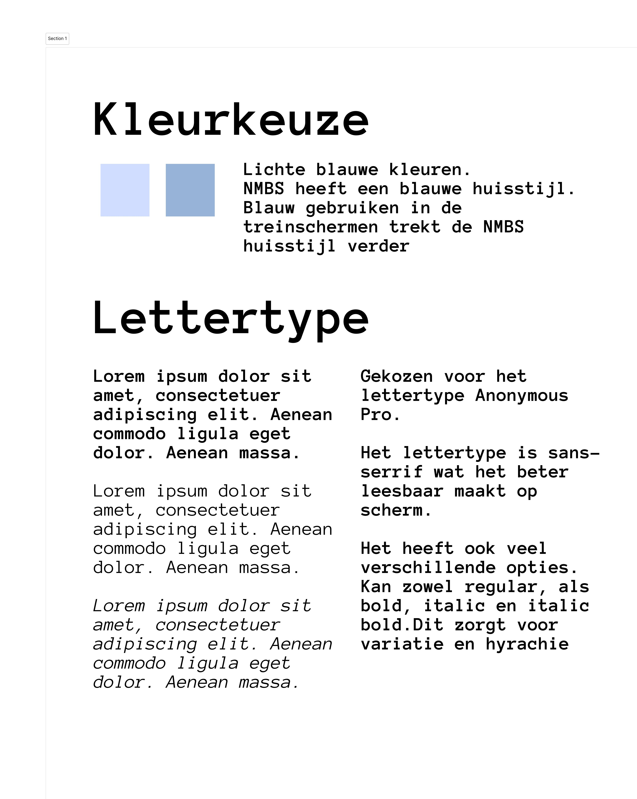

Figma Prototypes
Een diepere blik op de gedigitaliseerde schermen en de stijlkeuzes.

Prototype
Mid-Fidelity Schermen
Hier zie je de digitale vertaling van de schetsen. De focus lag op het positioneren van de elementen en het creëren van een logische hiërarchie. De interface is strak en functioneel gehouden.

Style Guide
Kleur & Typografie
Voor de kleuren heb ik gekozen voor een palet dat betrouwbaarheid uitstraalt. De typografie is gekozen op basis van leesbaarheid, wat essentieel is voor een stationsomgeving.